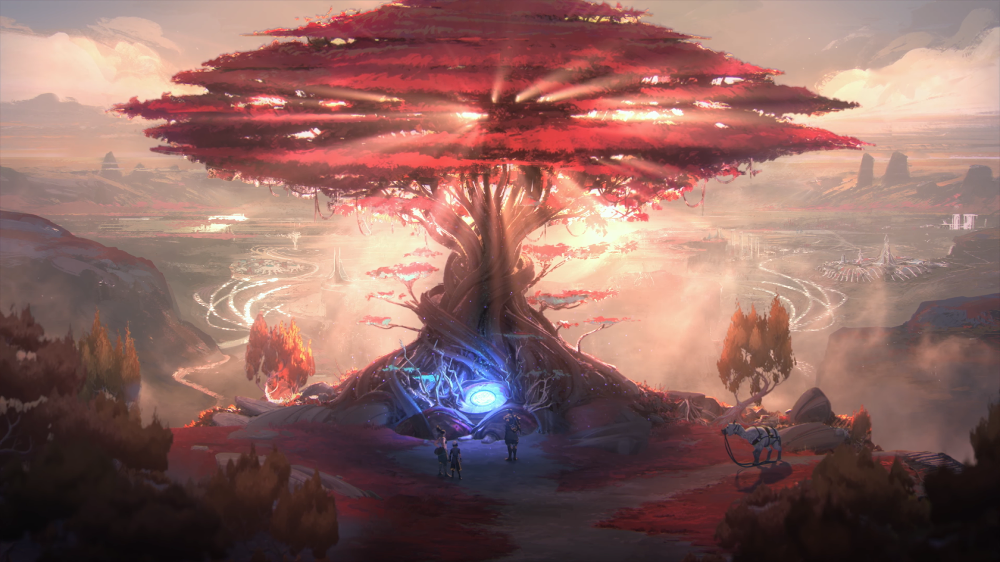
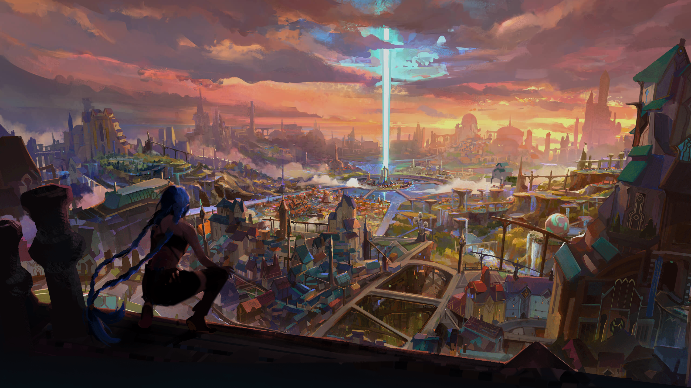
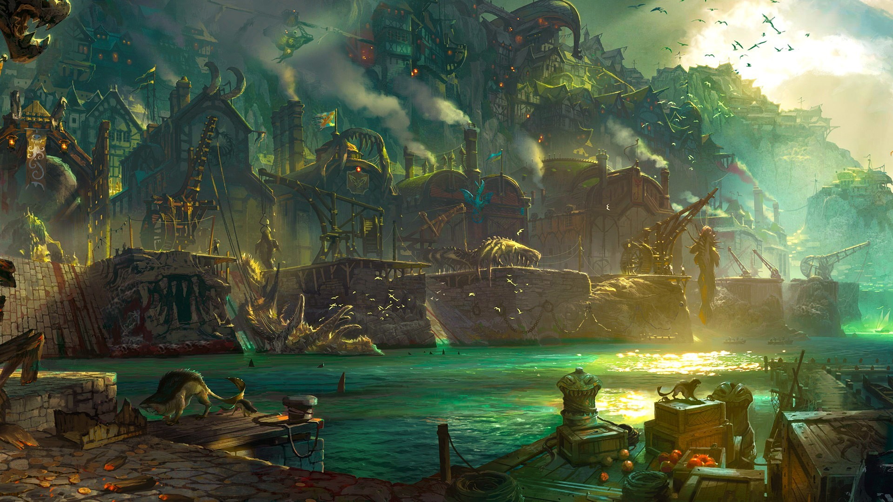
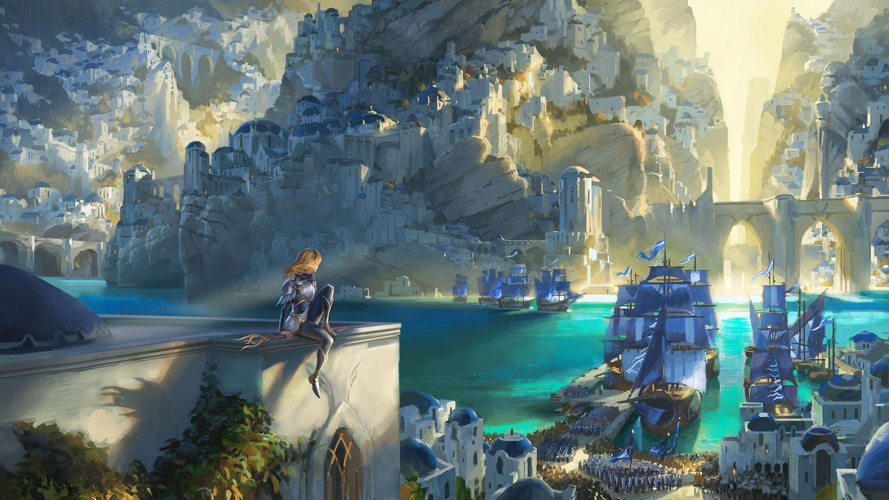

Государства Рунтерры
Иония представляется островом, славящийся природными красотами и магией. Природные зоны Ионии соответствуют провинциям, условно образующим федерацию. Её жители, живущие в разбросанных поселениях по всему огромному архипелагу, стремятся к духовному развитию, всеобщей гармонии и балансу с миром. В Ионии существует множество орденов и сект, каждая из которых следует своим (часто противоречивым) путям и идеалам. Самодостаточная и изоляционистская, Иония сохраняла нейтралитет в войнах, которые опустошали Валоран на протяжении веков — до тех пор, пока Ноксус не вторгся в её земли. После всех ужасов жестокого конфликта и оккупации ионийцам пришлось переосмыслить своё место в мире, но дальнейший путь развития своей страны, и каким будет дальнейший путь Ионии, они ещё не выбрали. Однако враждебность по отношению к Ноксусу привела к милитаризации и бдительности. По всему архипелагу растёт жажда изучения тёмных искусств.

Пилтовер – преуспевающий современный город, сила и влияние которого постоянно растут. Это культурный центр Рунтерры, где искусство, ремесла, торговля и прогресс идут рука об руку. Его успех основан не на военной силе, а на коммерческой жилке и дальновидности жителей. Сам город расположен на возвышающихся над океаном утесах, а в скальных пещерах под городом находится подземный район – Заун. Целые флотилии проплывают через его гигантские морские ворота, привозя товары со всего света. Сколачиваемые на торговле состояния дали толчок небывалому росту города. Пилтовер по-прежнему остается местом, где можно разбогатеть и претворить мечту в жизнь. Процветающие купеческие кланы вкладывают деньги в самые невероятные предприятия: грандиозные художественные проекты, тайные хекстековые исследования, архитектурные памятники – символы собственного могущества. Все больше изобретателей трудятся в развивающейся области хекстековых технологий, и Пилтовер становится центром притяжения для самых искусных мастеров со всего мира.

Некогда прекрасные земли, ныне известные как Сумрачные острова, пережили катастрофу магического происхождения. Теперь острова постоянно окутаны черным туманом, а земля здесь испорчена злыми чарами. Все живые существа, обитавшие на Сумрачных островах, мало-помалу лишались жизненной энергии, а это, в свою очередь, привлекало ненасытных и хищных призраков. Погибшие в черном тумане обречены на вечные скитания по этому мрачному краю. Хуже того, с каждым годом сила Сумрачных островов возрастает, что позволяет нежити расширять свои владения и похищать души людей по всей Рунтерре.

Расположенный на островах Синего пламени, Билджвотер – не просто портовый город. Кого здесь только не встретишь: и местных жителей, и охотников на монстров, и бандитов, и торговцев со всего света. Это место, где в мгновение ока сколачиваются состояния и разбиваются надежды. Те, кто скрывается от правосудия, долгов или преследователей, здесь могут начать все заново: на извилистых улочках Билджвотера никому нет дела до твоего прошлого. А самых неосторожных наутро можно увидеть плавающими в бухте – с пустыми кошельками и перерезанными глотками.

Демасия — это сильное государство, живущее по строгим законам и превозносящее свою военную историю. Здесь безраздельно правят идеалы справедливости, чести и долга. Это самодостаточная аграрная страна с плодородной землёй, густыми лесами, богатыми древесиной, и горами, полными полезных ископаемых. Государство ведёт себя замкнуто и настороженно — отчасти это связано с частыми нападениями варваров, грабителей и завоевателей. Некоторые считают, что золотой век Демасии уже миновал и, если страна не сумеет приспособиться к изменениям в мире (что многим кажется просто невозможным), закат её неизбежен. Тем не менее Демасия остаётся одной из ключевых сил Валорана и славится самой боеспособной и обученной армией на всей Рунтерре.

Ноксус – это могущественная империя со зловещей репутацией. Со стороны он представляется жестоким и грозным захватчиком. Другие же способны увидеть за воинственным обличьем поразительно равноправное общество, где уважают и развивают достоинства и таланты каждого. Здешний народ некогда был сборищем свирепых грабителей до тех пор, пока однажды не взял приступом древний город, который сегодня находится в самом сердце империи. Окруженные врагами со всех сторон ноксианцы постоянно навязывали им сражения, с каждым годом расширяя свою территорию. Эта борьба за выживание заставила ноксианцев превыше всего ценить силу, осознавая при этом, что она может проявляться множеством разных способов. Любой, независимо от социального положения, прошлого, происхождения и финансов, может добиться в Ноксусе власти и уважения, если проявит необходимые способности.